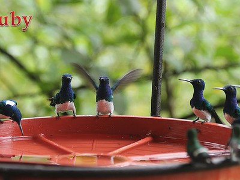
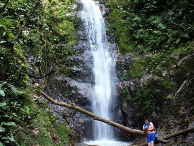
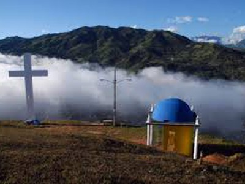

Reserva Buenaventura
Este santuario de aves es conocido a nivel mundial. Cuenta con senderos ecológicos rodeados de naturaleza.
Cascada Chorro Viringo
Un lugar perfecto para los amantes de la naturaleza y la fotografía. Disfruta de la tranquilidad del agua y el entorno.
Cerro la Cruz
Este cerro se encuentra ubicado al suroeste de la ciudad, el mismo que sirve de mirador para la ciudad, para el arribo existe una vía de acceso vehicular, además de un camino de herradura a lo largo de la falda del cerro, también conocido como Cerro Pata grande.
Mirador Virgen de La Merced
Este lugar ofrece una vista hermosa de la ciudad y adicionalmente tienes la oportunidad de realizar actividades de aventura como rapel.